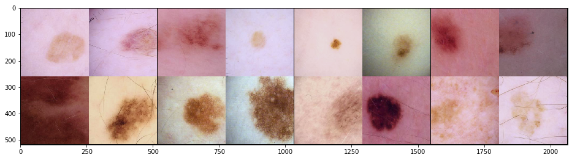

An introduction to PyTorch Lightning with comparisons to PyTorch
Better language models and their implications
In this blogpost, we will be going through an introduction to Pytorch Lightning and implement all the cool tricks like - Gradient Accumulation, 16-bit precision training, and also add TPU/multi-gpu support - all in a few lines of code. We will use Pytorch Lightning to work on SIIM-ISIC Melanoma Classification challenge on Kaggle.
Have you tried PytorchLightning already? If so, then you know why it’s so cool. If you haven’t, hopefully by the time you finish reading this post, you will find it pretty cool (the word ‘it’ could refer to this blogpost or the wonderful PytorchLightning library - I leave this decision to the reader).
Note: From here on, we refer to PytorchLightning as PL, cause it’s a long name to type and I left my favourite keyboard at work.
For a while now, I was jealous of Tensorflow solely because it’s possible to use the same script to train a model on CPU, GPU or TPU without really changing much! For example, take this notebook from my one of my favourite kagglers and - at the time of writing this blogpost - a researcher at NVIDIA - Chris Deotte and also, since yesterday, Kaggle 4x Grandmaster! Just by using an appropriate strategy in Tensorflow, it is possible to run the same experiments on your choice of hardware without changing anything else really. That is the same script could run in TPU, GPU or CPU.
If you’ve already worked on multi-GPU machines or used torch XLA to run things on TPU using PyTorch, then you know my rant. Changing hardware choices in PyTorch is not as convenient when it comes to this. I love PyTorch - I do, but just this one thing would make me really frustrated.
Welcome PL! I wish I tried this library sooner.
In this blogpost, we will be going through an introduction to PL and implement all the cool tricks like - Gradient Accumulation, 16-bit precision training, and also add TPU/multi-gpu support - all in a few lines of code. We use PL to work on SIIM-ISIC Melanoma Classification challenge on Kaggle. In this blogpost, our focus will be on introducing PL and we use the ISIC competition as an example.
We also draw comparisons to the typical workflows in PyTorch and compare how PL is different and the value it adds in a researcher’s life.
The first part of this post, is mostly about getting the data, creating our train and validation datasets and dataloaders and the interesting stuff about PL comes in The Lightning Module section of this post. If this stuff bores you because you’ve done this so many times already, feel free to skip forward to the model implemention.
- TOC {:toc}
1 What’s ISIC Melanoma Classification challenge?
From the description on Kaggle, > Skin cancer is the most prevalent type of cancer. Melanoma, specifically, is responsible for 75% of skin cancer deaths, despite being the least common skin cancer. The American Cancer Society estimates over 100,000 new melanoma cases will be diagnosed in 2020. It’s also expected that almost 7,000 people will die from the disease. As with other cancers, early and accurate detection—potentially aided by data science—can make treatment more effective. Currently, dermatologists evaluate every one of a patient’s moles to identify outlier lesions or “ugly ducklings” that are most likely to be melanoma.
In this competition, the participants are asked to build a Melonama classifier that classifies to identify melonama in images of skin lesions. Typical lesion images look like the ones below:

In this blogpost, we will use PL to build a solution that can tell the malign melonama images apart from the rest. The model should take only a few hours to train and have 0.92 AUC score!
A side note: Deep learning has come a far way. Compare this to 2012 where AlexNet was trained on multiple e GTX 580 GPU which has only 3GB of memory. To train on 1.2 million examples of Imagenet, the authors had to split the model (with just 8 layers) to 2 GPUs. It took 5-6 days to train this network. Today, it’s possible to train in a few hours or even minutes. For ISIC, each epoch for size 256x256 is around 2mins including validation on a P100 GPU.
2 Getting the data
You can download the 256x256 version of the Jpeg images here with all the required metadata to follow along.
3 Melonama Dataset
Getting our data ready for ingestion into the model is one of the basic things that we need to do for every project.
class MelonamaDataset:
def __init__(self, image_paths, targets, augmentations=None):
self.image_paths = image_paths
self.targets = targets
self.augmentations = augmentations
def __len__(self): return len(self.image_paths)
def __getitem__(self, idx):
image_path = self.image_paths[idx]
image = np.array(Image.open(image_path))
target = self.targets[idx]
if self.augmentations is not None:
augmented = self.augmentations(image=image)
image = augmented['image']
return image, torch.tensor(target, dtype=torch.long)The above dataset is a pretty simple class that is instantiated by passing in a list of image_paths, targets and augmentations if any. To get an item, it reads an image using Image module from PIL, converts to np.array performs augmentations if any and returns target and image.
We can use glob to get train_image_paths and val_image_paths and create train and val datasets respectively.
# psuedo code
train_image_paths = glob.glob("<path_to_train_folder>")
val_image_paths = glob.glob("<path_to_val_folder>")
sz = 256 #go bigger for better AUC score but slower train time
train_aug = train_aug = albumentations.Compose([
RandomCrop(sz,sz),
..., #your choice of augmentations
albumentations.Normalize(always_apply=True),
ToTensorV2()
])
val_aug = albumentations.Compose([
albumentations.CenterCrop(sz, sz),
albumentations.Normalize(always_apply=True),
ToTensorV2()
])
train_dataset = MelonamaDataset(train_image_paths, train_targets, train_aug)
val_dataset = MelonamaDataset(val_image_paths, val_targets, val_aug)Once we have our datasets ready, we can now create our dataloaders and let’s inspect the train images as a sanity check.
# Dataloaders
train_loader = torch.utils.data.DataLoader(
train_dataset, batch_size=64, shuffle=True, num_workers=4)
val_loader = torch.utils.data.DataLoader(
val_dataset, batch_size=64, shuffle=False, num_workers=4)# visualize images
import torchvision.utils as vutils
def matplotlib_imshow(img, one_channel=False):
fig,ax = plt.subplots(figsize=(16,8))
ax.imshow(img.permute(1,2,0).numpy())
images= next(iter(train_loader))[0][:16]
img_grid = torchvision.utils.make_grid(images, nrow=8, normalize=True)
matplotlib_imshow(img_grid)
Now that our dataloaders are done, and looking good, we are ready for some lightning for our Melonama classifier!
4 Lightning Module
PL takes away much of the boilerplate code. By taking away the Engineering Code and the Non-essential code, it helps us focus on the Research code!
The Quick Start and Introduction Guide on PL’s official documentation are great resources to start learning about PL! I started there too.
4.1 Model and Training
Our model in PL looks something like:
class Model(LightningModule):
def __init__(self, arch='efficientnet-b0'):
super().__init__()
self.base = EfficientNet.from_pretrained(arch)
self.base._fc = nn.Linear(self.base._fc.in_features, 1)
def forward(self, x):
return self.base(x)
def configure_optimizers(self):
return torch.optim.Adam(self.parameters(), lr=5e-4)
def step(self, batch):
x, y = batch
y_hat = self(x)
loss = WeightedFocalLoss()(y_hat, y.view(-1,1).type_as(y_hat))
return loss, y, y_hat.sigmoid()
def training_step(self, batch, batch_nb):
loss, y, y_hat = self.step(batch)
return {'loss': loss}
def validation_step(self, batch, batch_nb):
loss, y, y_hat = self.step(batch)
return {'loss': loss, 'y': y.detach(), 'y_hat': y_hat.detach()}
def validation_epoch_end(self, outputs):
avg_loss = torch.stack([x['loss'] for x in outputs]).mean()
auc = self.get_auc(outputs)
print(f"Epoch {self.current_epoch} | AUC:{auc}")
return {'loss': avg_loss}
def get_auc(self, outputs):
y = torch.cat([x['y'] for x in outputs])
y_hat = torch.cat([x['y_hat'] for x in outputs])
# shift tensors to cpu
auc = roc_auc_score(y.cpu().numpy(),
y_hat.cpu().numpy())
return aucWe are using WeightedFocalLoss from my previous blogpost, because this is an imbalanced dataset with only around 1.77% positive classes.
4.2 Model implementation compared to PyTorch
We add the __init__ and forward method just like you would in pure PyTorch. The LightningModule just adds some extra functionalities on top.
In pure pytorch, the main loop with training and validation would look something like:
train_dataset, valid_dataset = MelonamaDataset(...), MelonamaDatasaet(...)
train_loader, valid_loader = DataLoader(train_dataset, ...), DataLoader(valid_dataset, ...)
optimizer = ...
scheduler = ...
train_augmentations = albumentations.Compose([...])
val_aug = albumentations.Compose([...])
early_stopping = EarlyStopping(...)
model = PyTorchModel(...)
train_loss = train_one_epoch(model, optimizer, scheduler)
preds, valid_loss = evaluate(args, valid_loader, model)
report_metrics()
if early_stopping.early_stop:
save_model_checkpoint()
stop_training()And ofcourse, then we define our train_one_epoch and evaluate functions where the training loop looks typically like:
model.train()
for b_idx, data in enumerate(train_loader):
loss = model(**data)
loss.backward()
optimizer.step()
optimizer.zero_grad()And very similar for evaluate. As you can see, we have to write a lot of code to make things work in PyTorch. While this is great for flexibility, typically we have to reuse the same code over and over again in various projects. The training and evaluate loops hardly change much.
What PL does, is that it automates this process for us. No longer do we need to write the boilerplate code.
The training loop, goes directly inside the training_step method and the validation loop inside the validation_step method. The typical reporting of metrics happens inside the validation_epoch_end method. Inside the Model class, both the training_step and validation_step call the step method which get’s the xs and ys from the batch, calls forward to make a forward pass and returns the loss. When we are finished training, our validation loop get’s called and at the end of an epoch validation_epoch_end get’s called which accumulates the results for us and calculates AUC score. We use roc_auc_score because AUC score is used as a metric on the Kaggle competition itself.
And that’s really it. This is all it takes in PL to create, train and validate a deep learning model. There are some other nice functionalities like logging - Wandb and also tensorboard support which you can read more about here.
Shifting from PyTorch to PL is super easy. It took me around a few hours to read up the introduction docs and reimplement the ISIC model in PL. I find PL code is much more organized and compact compared to PyTorch and still very flexible to run experiments. Also, when sharing solutions with others, everybody knows exactly where to look - for example, the training loop is always in the training_step method, validation loop is inside the validation_step and so on.
In some ways, I was able to draw comparisons to the wonderful fastai library in the sense that both the libraries make our lives easier.
Similar to fastai, to train the model in PL, we can now simply create a Trainer and call .fit().
debug = False
gpus = torch.cuda.device_count()
trainer = Trainer(gpus=gpus, max_epochs=2,
num_sanity_val_steps=1 if debug else 0)
trainer.fit(model, train_dataloader=train_loader, val_dataloaders=val_loader)
## outputs
>> Epoch 0 | AUC:0.8667878706561116
Epoch 1 | AUC:0.8867006574533746And that’s really it. This is all it takes to create a baseline model in PL.
5 Gradient Accumulation
So now that our baseline model is ready, let’s add gradient accumulation!
trainer = Trainer(gpus=1, max_epochs=2,
num_sanity_val_steps=1 if debug else 0,
accumulate_grad_batches=2)It’s as simple as adding a single parameter in PL!
A typical workflow in PyTorch would look like:
accumulate_grad_batches=2
optimizer.zero_grad()
for b_idx, data in enumerate(train_loader):
loss = model(**data, args=args, weights=weights)
loss.backward()
if (b_idx + 1) % accumulate_grad_batches == 0:
# take optimizer every `accumulate_grad_batches` number of times
optimizer.step()
optimizer.zero_grad()PL nicely takes this boilerplate code away from us and provides easy access to researchers to implement gradient accumulation. It is very helpful to have larger batch sizes on a single GPU. To read more about it, refer to this great article by Hugging Face!
6 16-bit precision training
16 bit precision can cut the memory usage by half and also speed up training dramatically. Here is a research paper which provides comprehensive analysis on 16-bit precision training.
For a more gentler introduction refer to the fastai docs here which has some great resources and explains mixed precision very nicely.
To add 16-bit precision training, we first need to make sure that we PyTorch 1.6+. PyTorch only recently added native support for Mixed Precision Training.
To download the latest version of PyTorch simply run
!pip install --pre torch==1.7.0.dev20200701+cu101 torchvision==0.8.0.dev20200701+cu101 -f https://download.pytorch.org/whl/nightly/cu101/torch_nightly.htmlAfter this, adding 16-bit training is as simple as:
trainer = Trainer(gpus=1, max_epochs=2,
num_sanity_val_steps=1 if debug else 0,
accumulate_grad_batches=2, precision=16)If you want to continue to use an older version of PyTorch, refer here.
In a typical workflow in PyTorch, we would be using amp fron NVIDIA to directly manipulate the training loop to support 16-bit precision training which can be very cumbersome and time consuming. With PyTorch now adding support for mixed precision and with PL, this is really easy to implement.
7 TPU Support
Finally, we are down to my last promise of adding TPU support and being able to run this script on TPUs!
Here’s a post by Google introducing TPUs and here is an excellent blogpost comparing various pieces of hardware. TPUs are typically 5 times faster than a V100 and reduce training times significantly.
To use a TPU, switch to Google Colab or Kaggle notebooks with free TPU availability. For more information on TPUs, watch this video by Google again.
To train your models on TPU on PL is again very simple, download the required libraries and add a parameter to the trainer. :)
!curl https://raw.githubusercontent.com/pytorch/xla/master/contrib/scripts/env-setup.py -o pytorch-xla-env-setup.py
!python pytorch-xla-env-setup.py --version nightly --apt-packages libomp5 libopenblas-dev
trainer = Trainer(gpus=1, max_epochs=2,
num_sanity_val_steps=1 if debug else 0,
accumulate_grad_batches=2, precision=16,
tpu_cores=8)Here is a notebook by Abhishek Thakur for ISIC using TPUs with pure PyTorch. If you compare, you’d realise how easy it is now with PL to train on TPUs.
8 Conclusion
So I hope by now, you were able to compare the differences between PyTorch and PL and that I have convinced you enough to at least try out PL. [Here] is an excellent Kaggle competition to practice those skills and use PL! In the first few experiments with PL, I have found my work to be more streamlined and also I have noticed a reduction in bugs. I find it easier to experiment with different batch sizes, mixed precision, loss functions, optimizers and also schedulers. PL is definitely worth a try.
9 Credits
Thanks for reading! And please feel free to let me know via twitter if you did end up trying PyTorch Lightning and the impact this has had on your experimentation workflows. Constructive feedback is always welcome.
- The implementation of Model was adapted and modified from this wonderful notebook on Kaggle.
subscribe.html